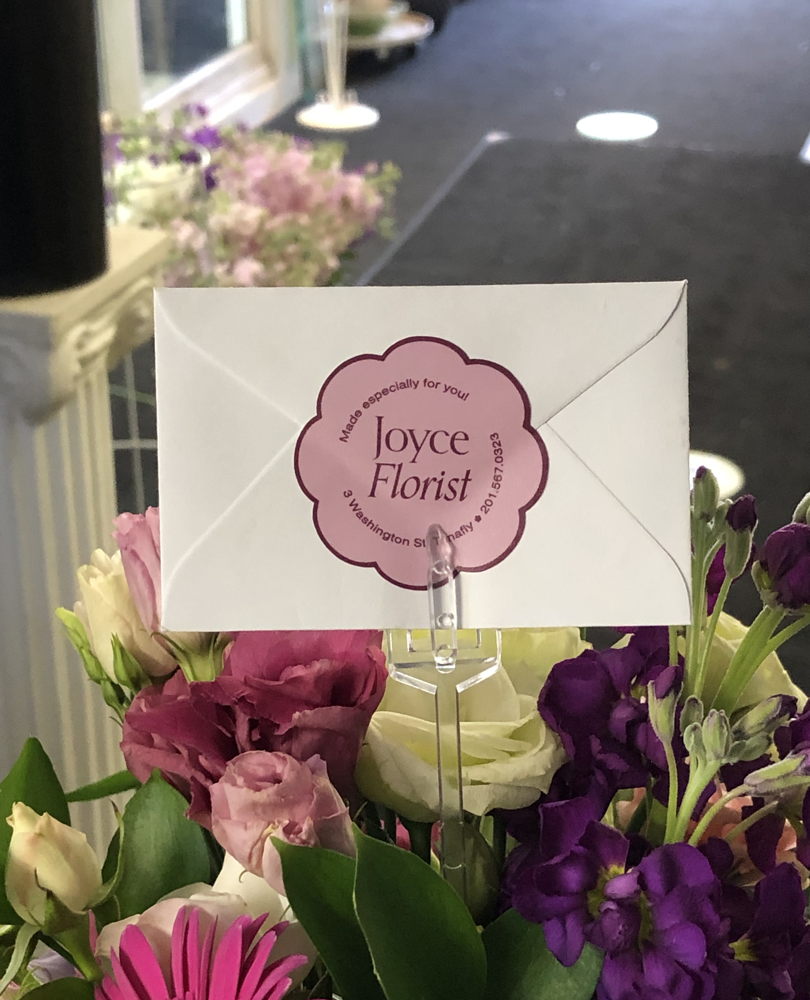
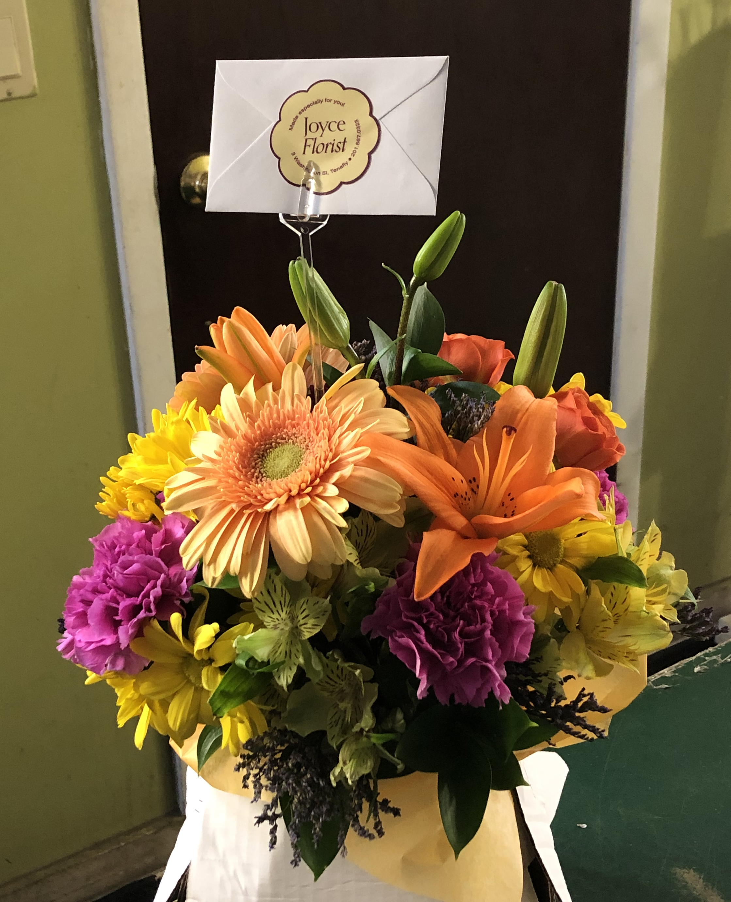
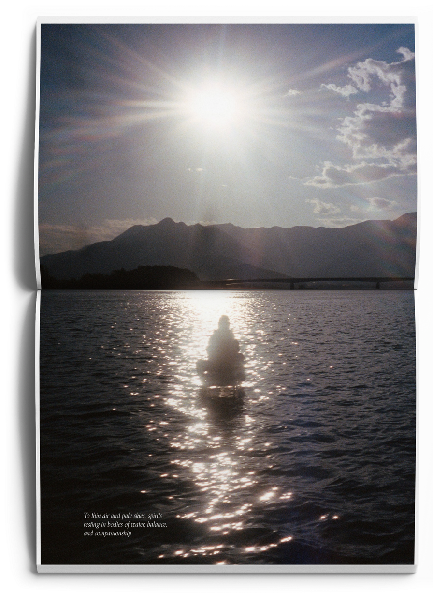
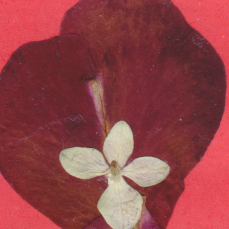
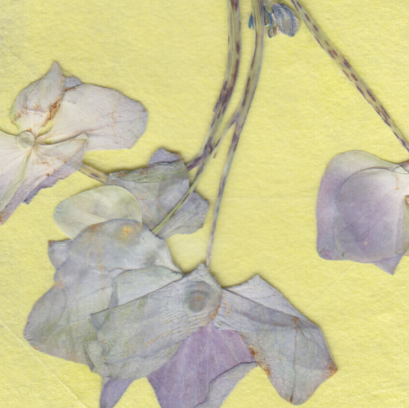
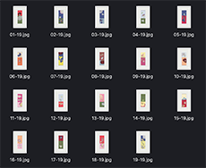
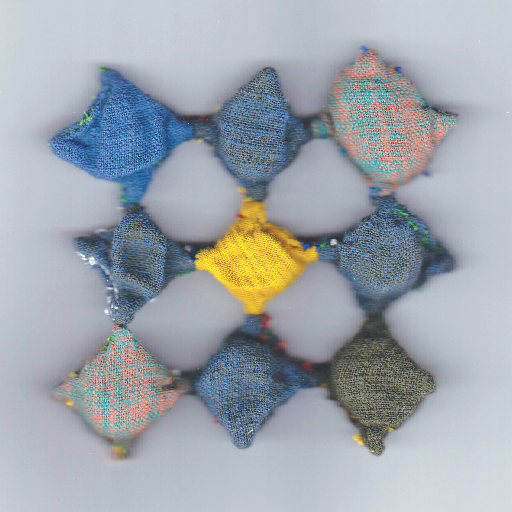
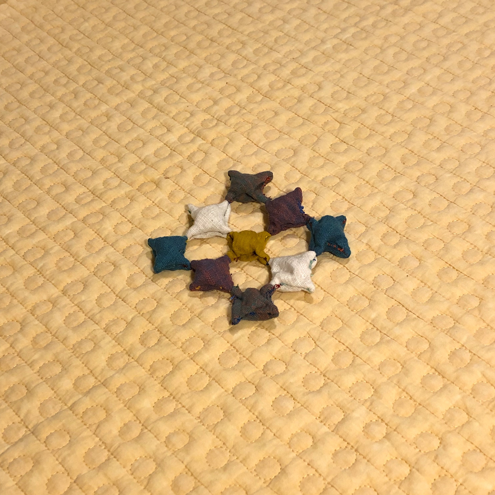

Joyce Florist
is an Asian-immigrant-owned flower shop that has been providing floral arrangements and houseplants for loved ones in Tenafly, NJ and surrounding areas since 2000.
This project consists of an updated typographic logo, awning, business card, packaging stickers, and Instagram account. This new identity is built to affirm this small business's lasting quality in flowers, relationship with its customers, and presence within its local community.
ㅓ
ㅏ
Packaging stickers, 4.45cmx4.45cm


PAC
is Wellesley's Pan-Asian Council; a student cultural org that oversees and works with all 16 AAPI cultural organizations on campus. As an "umbrella" org, it promotes awareness and care towards issues pertinent to students of Asian descent through facilitating leadership meetings, organizing community-building trainings, hosting open discussions, and collaborating with other orgs.
Due to this org's unique membership being made up of representatives of AAPI student orgs, it constantly seeks ways to further visibility amongst the general student body. This interlocking monogram logo was designed to tie a strong visual identity to its accustomed acronym and pays a cheeky homage to the org's curiously prevailing elephant emblem.
UI/UX, Tablet Interface Design
CLEVR
stands for The Collaborative Learning Experiences in Virtual Reality; an interactive educational two-player game designed to help high school students learn cell biology using immersive 3DVR. The project examines the influence of new technologies and game-based approaches in education. How can XR (cross/extended reality) aid in expanding a student's conception of a cell - something so abstract yet also so fundamental and material?
New research findings and biweekly user testings would inform new functions in the game, resulting in regular revitalizations of buttons and their behaviors. The tablet interface was designed to render cohesiveness and ease, as it holds much academic information, to complement its visually-whelmed VR counterpart.
Team: Darius Bopp, Therese Mills, Katharina Gschwind, Temi Taylor, Femi Oladipupo, Valeria Yang
Full navigator (tablet) tutorial available here.
ㅓ
ㅏ
A. User Personas
 A. User Personas
A. User Personas
A. User Personas
B. Wireframes, Iteration 1; Balsamiq
B. Wireframes, Iteration 2; User Testing, Balsamiq
C. Final Prototype; HTML/CSS
C. Final Prototype; HTML/CSS
NextSem
is a mobile application designed for a Human-Computer Interaction course at Wellesley College. At the heart of this project is a desire to provide ease and empowerment for Wellesley students planning for their undergrad careers.
Enough time and energy is spent mulling over prospective courses and major/distribution requirements without having to also navigate disjointed platforms. Students are often left to singly balance interests and needs on external support such as excel sheets, written notes, and schedule apps. NextSem offers a consolidated information readily available and tailored to each Wellesley student. All to provide high-quality support, convenience, and experience as they plan for future semesters.
Team: Christina Chen, Hiya Vazirani
Final prototype was implemented with HTML & CSS
Graphic Design, Print Editorial

A. Photo Book; Dimensions A4; 12 pages
Assorted Design Projects
: Curated photo books holding some favorites sifted out of my ever-growing digital photo abyss, conceptually driven design explorations, reflections on film, etc. **Update in progress**
Printed Exchange, Handmade Bookmarks, Edition Size: 19
ㅓ
ㅏ

Detail crop. Will share full image post-Zoom exchange

Detail crop. Will share full image post-Zoom exchange
Floorets
Students from previous print courses at Wellesley were invited to virtually reunite for a Print Exchange reflecting on the past year (specifically on small joys).
The notion of a "print" was expanded to anything handmade that could slip into a 5inx7in/B6 mailing envelope. My alternative method involved pressing flowers (that I collected off the floor at Joyce Florist) and curating them on bookmarks/landscapes made from scraps of paper.
Everything has been sent out, am currently awaiting for our Zoom session where we'll gather, exchange, and share!

Senior Exhibition Work, Mixed Media

Sitting on the Ground, Against the Couch
was my piece for Wellesley College's 2020 Senior and Thesis Exhibition. You can read more about the work here. A practice of meditation on the tensions in diasporic habits of rest, made from found fabric, collected stones, and thread. Inspired by cooling mats and heated floors, and the ever-present Lamé curve.

9.525cmx9.525cm